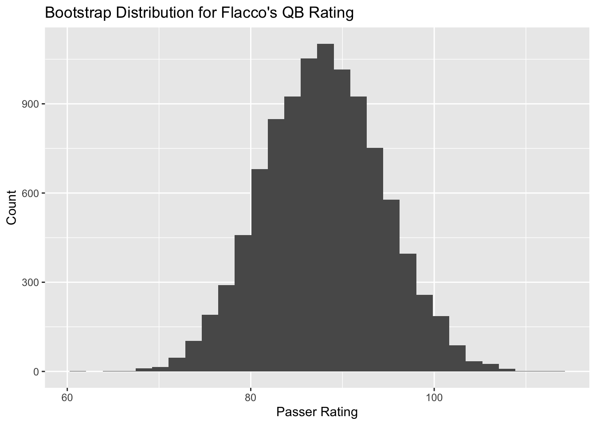

Chapter 5 Inferential Statistics
5.1 Defining a Population
For team and individual statistics in sports, we often split data up by the seasons. For statistical inference, we need to define what the population is and what the sample is. It is acceptable to define a season as the population and a subset of the season as a sample, but this is usually not exactly what we want to do.
Instead, we often think of a season as a random sample from a theoretical population of all possible seasons. In the same manner, we can think of individual games are a random sample from a theoretical population of all possible games.
5.2 Statistical Inference
Definition 5.1 Statistical Inference is the process of inferring properties of a population by use of sample data.
For statistical inference, we need a point estimator and a measure of uncertainty. We will focus on statistical inference for population means and population proportions.
We will examine two methods of Statistical Inference:
- Confidence Intervals
- Hypothesis Tests
For sports data, we often want to infer properties of a player’s (or team’s) underlying ability on a game or season level.
5.2.1 Confidence Intervals
Definition 5.2 A confidence interval gives a range of plausible values for a population parameter. Confidence intervals can be one-sided or two-sided.
Different Types of Confidence Intervals
There are three different types of hypothesis tests.
Left-tailed confidence interval
Right-tailed confidence interval
Two-tailed confidence interval
How to Interpret a confidence interval
5.2.2 Hypothesis Tests
The goal of a hypothesis test is to test competing claims about a population parameter. In other words, we want to determine if the sample data are consistent with the null hypothesis which is our initial assumption regarding the population parameter of interest.
Definition 5.3 The null hypothesis, denoted \(H_0\), is the claim that is initially assumed to be true.
Definition 5.4 The alternative hypothesis, denoted \(H_a\), is the assertion contradictory to \(H_0\) (“the opposite of \(H_0\)”).
The null hypothesis will be rejected in favor of the alternative hypothesis if the sample evidence suggests that \(H_0\) is false.
The two possible conclusions of a hypothesis test are Reject \(H_0\) or Fail to Reject \(H_0\).
Rules for formulating hypotheses
- \(H_0\) contains “=”
- \(H_a\) contains \(\neq\), \(>\), \(<\)
- Usually, the claim we are attempting to show is more plausible is \(H_a\)
Different Types of Hypothesis Tests
There are three different types of hypothesis tests.
Left-tailed test
Right-tailed test
Two-tailed test
Errors in Hypothesis Testing
After collecting a sample, we will decide which hypothesis is supported by the data.
Since we don’t know the true parameter value, there is a chance we will make an error.
Two Types of Errors in Hypothesis Testing
- Type I error (\(\alpha\)): Reject \(H_0\) when \(H_0\) is true.
- Type II error (\(\beta\)): Fail to reject \(H_0\) when \(H_0\) is false.
Note: \(\alpha\) is also called the level of significance for a test.
Six Steps for Hypothesis Testing
Different textbooks will give a different number of steps or outline on how to complete a hypothesis test. For our class, stick to the following method.
Step 1: State the hypotheses.
Step 2: Determine the level of significance.
Step 3: Compute a test statistic.
Step 4: Calculate a p-value.
Step 5: Make a statistical decision.
Step 6: Interpret the statistical decision (in the context of the problem).
5.3 Inference for Population Mean
Theorem 5.1 A random sample from an infinite population with mean \(\mu\) and variance \(\sigma^2\) has the following properties:
\(E[\bar{X}] = \mu\)
\(Var(\bar{X}) = \frac{\sigma^2}{n}\)
\(\hat{SE}(\bar{X}) = \frac{s}{\sqrt{n}}\)
5.3.1 Confidence Interval for Population Mean
Definition 5.5 The confidence interval for a population mean \(\mu\) with sample mean \(\bar{x}\) and sample variance \(s^2\) is given by:
\(\bar{x} \pm t_{c.v.}\frac{s}{\sqrt{n}}, \, df=n-1\),
where \(t_{c.v.}\) denotes the critical value for a t-distribution with \(df=n-1\) degrees of freedom for the required confidence level.
Example 5.1 In Michael Jordan’s third season, 1986–1987, he had a career best with an average of 37.1 points per game (standard deviation: 9.92) while playing an average of 40.0 minutes per game over 82 games. Data for Jordan’s 1986–1987 season are given in jordan86-87.csv.
Video highlights from Michael Jordan’s 1986–1987 season:
https://www.youtube.com/watch?v=cWSrUhhR3DA
Let \(\mu\) be the true point scoring ability of Michael Jordan during his 1986–1987 season. Create a 95% two-sided confidence interval for \(\mu\).
jordan86_87 <- read_csv("data/jordan86-87.csv")
jordan86_87 %>% summarize(
Games = n(),
`Points Mean`= mean(PTS),
`Points SD` = sd(PTS),
`Minutes Mean` = mean(MP),
`Minutes SD` = sd(MP)) %>%
kable(booktabs=T,digits = 2)| Games | Points Mean | Points SD | Minutes Mean | Minutes SD |
|---|---|---|---|---|
| 82 | 37.09 | 9.92 | 40.01 | 4.44 |
library(infer)
jordan86_87 %>% t_test(response=PTS,conf_int = 0.95) %>%
kable(booktabs=T,digits = 2)| statistic | t_df | p_value | alternative | estimate | lower_ci | upper_ci |
|---|---|---|---|---|---|---|
| 33.84 | 81 | 0 | two.sided | 37.09 | 34.9 | 39.27 |
5.3.2 Hypothesis Test for Population Mean
Definition 5.6 The test statistic for a population mean \(\mu\) with sample mean \(\bar{x}\) and sample variance \(s^2\) is given by:
\(t_{test} = \frac{\bar{x}-\mu}{s/\sqrt{n}} \sim t_{n-1}\)
Example 5.2 Wilt Chamberlain is considered one of the greatest of all-time in basketball and he had a career year in the 1961–1962 season. Data for Chamberlain’s 1961–1962 season are given in wilt61-62.csv.
On March 2, 1962, Wilt Chamberlain scored 100 points in a single game. He also averaged 50.4 points per game (standard deviation: 12.0 points) while playing an average of 48.5 minutes per game over 80 games.
Background videos on Wilt Chamberlain:
https://www.youtube.com/watch?v=LxMeEzhvNRs
https://www.youtube.com/watch?v=1WsCtyLGg1w
Let \(\mu\) be Wilt’s true point scoring ability in 1961–1962. Test the claim that \(\mu > 50\) PPG at \(\alpha=0.10\).
wilt61_62 <- read_csv("data/wilt61-62.csv")
wilt61_62 %>% summarize(
Games = n(),
`Points Mean`= mean(PTS),
`Points SD` = sd(PTS),
`Minutes Mean` = mean(MP),
`Minutes SD` = sd(MP)) %>%
kable(booktabs=T,digits = 2)| Games | Points Mean | Points SD | Minutes Mean | Minutes SD |
|---|---|---|---|---|
| 80 | 50.36 | 11.99 | 48.52 | 2.5 |
wilt61_62 %>% t_test(response=PTS,mu=50,alternative = "greater") %>%
kable(booktabs=T,digits = 2)| statistic | t_df | p_value | alternative | estimate | lower_ci | upper_ci |
|---|---|---|---|---|---|---|
| 0.27 | 79 | 0.39 | greater | 50.36 | 48.13 | Inf |
5.3.3 Test for Difference in Means
Theorem 5.2 The test statistic for a difference in population means \(\mu_1 - \mu_2\) is given by:
\(t_{test} = \frac{\bar{x}_1 -\bar{x}_2 - D_0}{\sqrt{\frac{s_1^2}{n_1}+\frac{s_2^2}{n_2}}} \sim t_{\nu}\)
where \(\nu = \frac{\big(s_1^2/n_1 + s_2^2/n_2\big)^2}{(s_1^2/n_1)^2/(n_1-1) + (s_2^2/n_2)^2/(n_2-1)}\)
5.3.4 Confidence Interval for Difference in Means
Theorem 5.3 The confidence interval for a difference in population means \(\mu_1 - \mu_2\) is given by:
\((\bar{x}_1 - \bar{x}_2) \pm t_{c.v.} \sqrt{\frac{s_1^2}{n_1}+\frac{s_2^2}{n_2}}\)
where \(t_{c.v.}\) denotes the critical value for a t-distribution with \(df=\nu\) degrees of freedom for the required confidence level and \(\nu = \frac{\big(s_1^2/n_1 + s_2^2/n_2\big)^2}{(s_1^2/n_1)^2/(n_1-1) + (s_2^2/n_2)^2/(n_2-1)}\)
Example 5.3 NBA statistics are often given as a rate statistic per 36 minutes to account for differences in playing time. Compare points per game (PPG) and points per 36 minutes (PP36) on a season level for Jordan’s 1986–1987 season and Chamberlain’s 1961–1962 season.
wilt_pp36 <- sum(wilt61_62$PTS)/sum(wilt61_62$MP)*36
jordan_pp36 <- sum(jordan86_87$PTS)/sum(jordan86_87$MP)*36
data.frame(`Wilt PPG` = mean(wilt61_62$PTS),
`Jordan PPG` = mean(jordan86_87$PTS),
`Wilt PP36` = wilt_pp36,
`Jordan PP36` = jordan_pp36) %>%
kable(booktabs=T,digits = 2)| Wilt.PPG | Jordan.PPG | Wilt.PP36 | Jordan.PP36 |
|---|---|---|---|
| 50.36 | 37.09 | 37.36 | 33.37 |
Example 5.4 Calculate PP36 on a game-by-game basis for Jordan and Chamberlain. Create a 99% confidence interval for the difference in PP36 and make a statistical decision as to if there is a difference.
jordan86_87$PP36 <- jordan86_87$PTS/jordan86_87$MP*36
wilt61_62$PP36 <- wilt61_62$PTS/wilt61_62$MP*36
jordan_wilt <- data.frame(PP36=c(jordan86_87$PP36,wilt61_62$PP36),
Player=c(rep("MJ",82),rep("WC",80)))
jordan_wilt %>% t_test(formula=PP36~Player,
order=c("WC","MJ"),conf_level = 0.99) %>%
kable(booktabs=T,digits = 2)| statistic | t_df | p_value | alternative | estimate | lower_ci | upper_ci |
|---|---|---|---|---|---|---|
| 2.84 | 159.96 | 0.01 | two.sided | 3.87 | 0.32 | 7.42 |
5.4 Inference for Population Proportion
Theorem 5.4 A random sample of size \(n\) from an infinite population with mean \(\pi\) has the following properties:
\(E[\hat{p}] = \pi\)
\(Var(\hat{p}) = \frac{\pi(1-\pi)}{n}\)
\(\hat{SE}(\hat{p}) = \sqrt{\frac{\hat{p}(1-\hat{p})}{n}}\)
5.4.1 Confidence Interval for Population Proportion
Theorem 5.5 The confidence interval for a population proportion \(\pi\) with sample proportion \(\hat{p}\) and sample size \(n\) is given by:
\(\hat{p} \pm z_{c.v.}\sqrt{\frac{p(1-p)}{n}}\)
where \(z_{c.v.}\) denotes the critical value for a z-distribution for the required confidence level.
5.4.2 Test for Population Proportion
Theorem 5.6 The test statistic for a population proportion \(\pi\) is given by:
\(z_{test} = \frac{\hat{p}-\pi}{\sqrt{\frac{\pi(1-\pi)}{n}}} \sim \mathcal{N}(0,1)\)
Example 5.5 From Mathletics (Section 4.8): Since interleague play began in 1997, there was a suspicion that American League teams had a slight advantage since they had a full-time designate hitter on their roster. The designated hitter was approved for National League play in 2022. From 1997 until 2013, American League teams played the National League teams in 4,264 interleague games. American League teams won 2,235 of the games (52.4% winning percentage). We want to test if the true winning percentage of American League teams exceeded 50% at a significance level of 0.01.
n <- 4264
al <- 2235
nl <- n - al
phat <- al/n
# Calculate the CI manually
se <- sqrt(phat*(1-phat)/n)
z <- qnorm(0.99)
moe <- z*se
bound <- phat-moe; bound## [1] 0.5063636# Calculate test statistic and p-value manually
z_test <- (phat-0.5)/sqrt(0.5*0.5/n)
p_value <- pnorm(z_test,lower.tail = F)
data.frame(`Test Stat` = z_test, `P-value` = p_value) %>%
kable(booktabs=T,digits = 4)| Test.Stat | P.value |
|---|---|
| 3.1547 | 8e-04 |
# Use binomial test
binom.test(x=al,n=n,p=0.5,alternative = "greater",conf.level = 0.99)##
## Exact binomial test
##
## data: al and n
## number of successes = 2235, number of trials = 4264, p-value =
## 0.0008449
## alternative hypothesis: true probability of success is greater than 0.5
## 99 percent confidence interval:
## 0.5062306 1.0000000
## sample estimates:
## probability of success
## 0.5241557data <- data.frame(Winner = c(rep(1,al),rep(0,nl)))
data %>% t_test(response=Winner,mu=0.5,conf_level = 0.99,alternative = "greater")## # A tibble: 1 × 7
## statistic t_df p_value alternative estimate lower_ci upper_ci
## <dbl> <dbl> <dbl> <chr> <dbl> <dbl> <dbl>
## 1 3.16 4263 0.000800 greater 0.524 0.506 Inf5.4.3 Confidence Interval for Difference in Proportions
Theorem 5.7 The confidence interval for a difference in population proportions \(\pi_1 - \pi_2\) is given by:
\((\hat{p}_1 - \hat{p}_2) \pm z_{c.v.}\sqrt{\frac{\hat{p}_1(1-\hat{p}_1)}{n_1}+\frac{\hat{p}_2(1-\hat{p}_2)}{n_2}}\)
where \(z_{c.v.}\) denotes the critical value for a z-distribution for the required confidence level.
5.4.4 Test for Difference in Proportions
Theorem 5.8 The test statistic for a difference in population proportions \(\pi_1 - \pi_2\) is given by:
\(z_{test} = \frac{\hat{p}_1 - \hat{p}_2 - D_0}{\sqrt{\frac{\hat{p}_1(1-\hat{p}_1)}{n_1}+\frac{\hat{p}_2(1-\hat{p}_2)}{n_2}}} \sim \mathcal{N}(0,1)\)
Example 5.6 Football coaches often try to “ice the kicker” before a late field goal attempt.
Paul Dalen did some analysis for icing the kicker on the collegiate level:
https://www.footballstudyhall.com/2018/11/24/18110091/is-icing-the-kicker-really-a-thing
From his dataset that includes data from 2017–2018, we have the following:
For field goal attempts that were 36–45 yards, iced kickers made 41 out of 66 attempts and non-iced kickers made 195 out of 287 attempts. Is there evidence of a difference in proportions of iced and non-iced kickers? Test the hypothesis at \(\alpha=0.05\) and create a 95% confidence interval for the difference.
# Iced Kickers
n.ice <- 66
x.ice <- 41
phat.ice <- x.ice/n.ice
# Non-iced Kickers
n.nice <- 287
x.nice <- 195
phat.nice <- x.nice/n.nice
# Calculate the 95% CI manually
diff <- phat.ice - phat.nice
se <- sqrt(phat.ice*(1-phat.ice)/n.ice + phat.nice*(1-phat.nice)/n.nice)
z <- qnorm(0.975)
moe <- z*se
(bounds <- c(diff-moe,diff+moe))## [1] -0.1871143 0.0706535# Calculate the z-test and p-value manually
z_test <- diff/se
p_value <- 2*pnorm(z_test)
data.frame(`P(Make|Ice)` = phat.ice, `P(Make|No Ice)`= phat.nice,
`Test Stat` = z_test, `P-value` = p_value) %>%
kable(booktabs=T,digits = 4)| P.Make.Ice. | P.Make.No.Ice. | Test.Stat | P.value |
|---|---|---|---|
| 0.6212 | 0.6794 | -0.8855 | 0.3759 |
5.5 Bootstrap
Bootstrapping is a resampling method with replacement that can be used to estimate margins of error, create confidence intervals, or complete statistical testing. It is particularly useful when distributional assumptions may be in doubt for standard inferential methods.
A bootstrap sample is created by sampling with replacement from known sample data, calculating the statistic of interest, and then analyzing the results from all of the bootstrap samples.
Example 5.7 Example from Analytic Methods in Sports (Section 4.5): In 2012, Baltimore Ravens quarterback Joe Flacco passed for 3,817 yards and had a passer rating of 87.7. We would like to build a confidence interval for Flacco’s passer rating using bootstrapping.
# Load data
flacco2012 <- read_csv("data/flacco2012.csv",show_col_types = F)
# Build Kable Table for data
flacco2012 %>%
kable(booktabs=T,digits = 4)| Game | Date | Opp | Cmp | Att | Yds | TD | Int | Rate |
|---|---|---|---|---|---|---|---|---|
| 1 | 9/10/12 | CIN | 21 | 29 | 299 | 2 | 0 | 128.4 |
| 2 | 9/16/12 | PHI | 22 | 42 | 232 | 1 | 1 | 66.8 |
| 3 | 9/23/12 | NWE | 28 | 39 | 382 | 3 | 1 | 117.7 |
| 4 | 9/27/12 | CLE | 28 | 46 | 356 | 1 | 1 | 83.2 |
| 5 | 10/7/12 | KAN | 13 | 27 | 187 | 0 | 1 | 55.6 |
| 6 | 10/14/12 | DAL | 17 | 26 | 234 | 1 | 0 | 106.9 |
| 7 | 10/21/12 | HOU | 21 | 43 | 147 | 1 | 2 | 45.4 |
| 8 | 11/4/12 | CLE | 15 | 24 | 153 | 1 | 0 | 94.6 |
| 9 | 11/11/12 | OAK | 21 | 33 | 341 | 3 | 1 | 115.8 |
| 10 | 11/18/12 | PIT | 20 | 32 | 164 | 0 | 0 | 75.5 |
| 11 | 11/25/12 | SDG | 30 | 51 | 355 | 1 | 0 | 86.6 |
| 12 | 12/2/12 | PIT | 16 | 34 | 188 | 1 | 1 | 61.9 |
| 13 | 12/9/12 | WAS | 16 | 21 | 182 | 3 | 1 | 121.4 |
| 14 | 12/16/12 | DEN | 20 | 40 | 254 | 2 | 1 | 76.5 |
| 15 | 12/23/12 | NYG | 25 | 36 | 309 | 2 | 0 | 114.2 |
| 16 | 12/30/12 | CIN | 4 | 8 | 34 | 0 | 0 | 61.5 |
| ALL | 16 Games | NA | 317 | 531 | 3817 | 22 | 10 | 87.7 |
# Function to calculate passer rating
rating <- function(QB,ind){
dat <- QB[ind,]
att <- sum(dat$Att)
ypa <- sum(dat$Yds)/att
ipa <- sum(dat$Int)/att
cpa <- sum(dat$Cmp)/att
tdpa <- sum(dat$TD)/att
Y <- 0.25 * (ypa - 3)
T <- 20 * tdpa
I <- 2.375 - 25*ipa
C <- 5 * (cpa-0.3)
100*(C+Y+T+I)/6
}# Remove season total row
flacco2012 <- flacco2012 %>% slice(1:16)
rating(flacco2012,1:16)## [1] 87.74718# Manually find bootstrap distribution and statistics
n.sims <- 10000
ratings <- rep(NA,10000)
for(i in 1:n.sims){
temp.ind <- sample(1:16,16,replace=T)
ratings[i] <- rating(flacco2012,temp.ind)
}
ratings %>% data.frame() %>%
ggplot(aes(x=.)) + geom_histogram(bins=30) +
labs(x="Passer Rating",y="Count",
title="Bootstrap Distribution for Flacco's QB Rating")
# Bootstrap statistics
(mean.pr <- mean(ratings))## [1] 87.89389(se.pr <- sd(ratings))## [1] 6.482204# Approximate CI for Passer Rating using MOE
moe.pr <- qnorm(0.975) * se.pr
(bounds.pr <- c(mean.pr-moe.pr,mean.pr+moe.pr))## [1] 75.1890 100.5988# Approximate CI using middle 95%
quantile(ratings,c(0.025,0.975))## 2.5% 97.5%
## 75.38335 100.68129# Bootstrap using "boot" package
library(boot)
(boot.pr <- boot(data=flacco2012,statistic=rating,R=10000))##
## ORDINARY NONPARAMETRIC BOOTSTRAP
##
##
## Call:
## boot(data = flacco2012, statistic = rating, R = 10000)
##
##
## Bootstrap Statistics :
## original bias std. error
## t1* 87.74718 0.1468445 6.364337boot.ci(boot.out = boot.pr,type="perc")## BOOTSTRAP CONFIDENCE INTERVAL CALCULATIONS
## Based on 10000 bootstrap replicates
##
## CALL :
## boot.ci(boot.out = boot.pr, type = "perc")
##
## Intervals :
## Level Percentile
## 95% ( 75.43, 100.58 )
## Calculations and Intervals on Original Scale